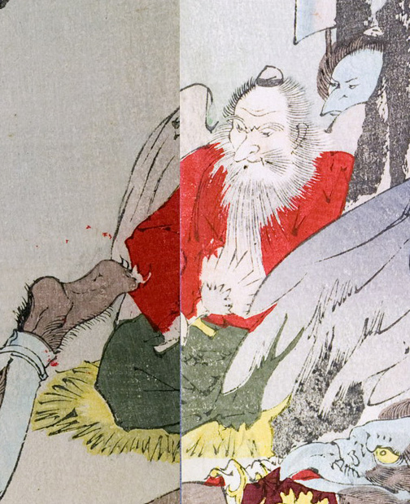

筵に座った老人のような天狗。赤い着物と黒い袴を身につけている。頭襟を付け、右手には団扇を持っている。背には翼があり、顔は白ひげに覆われ鼻が長い。
著作者：秀湖／出典：親書誌：U426_nichibunken_0144：御曹子牛若丸鞍馬ニ劍法ヲ修ス；オンゾウシウシワカマルクラマニケンポウヲシュウス／日付：2009／資源識別子：U426_nichibunken_0144_0001_0005
Copyright (c)2010- International Research Center for Japanese Studies, Kyoto, Japan. All rights reserved.